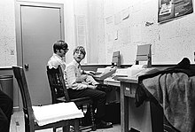

어린시절
-
Bill Gates was born in Seattle, Washington on October 28, 1955. He is the son of William H. Gates Sr. (1925–2020) and Mary Maxwell Gates (1929–1994). His ancestry includes English, German, and Irish/Scots-Irish. His father was a prominent lawyer, and his mother served on the board of directors for First Interstate BancSystem and the United Way of America. Gates's maternal grandfather was J. W. Maxwell, a national bank president. Gates has an older sister Kristi (Kristianne) and a younger sister Libby. He is the fourth of his name in his family but is known as William Gates III or "Trey" (i.e., three) because his father had the "II" suffix. The family lived in the Sand Point area of Seattle in a home that was damaged by a rare tornado when Gates was seven years old.
